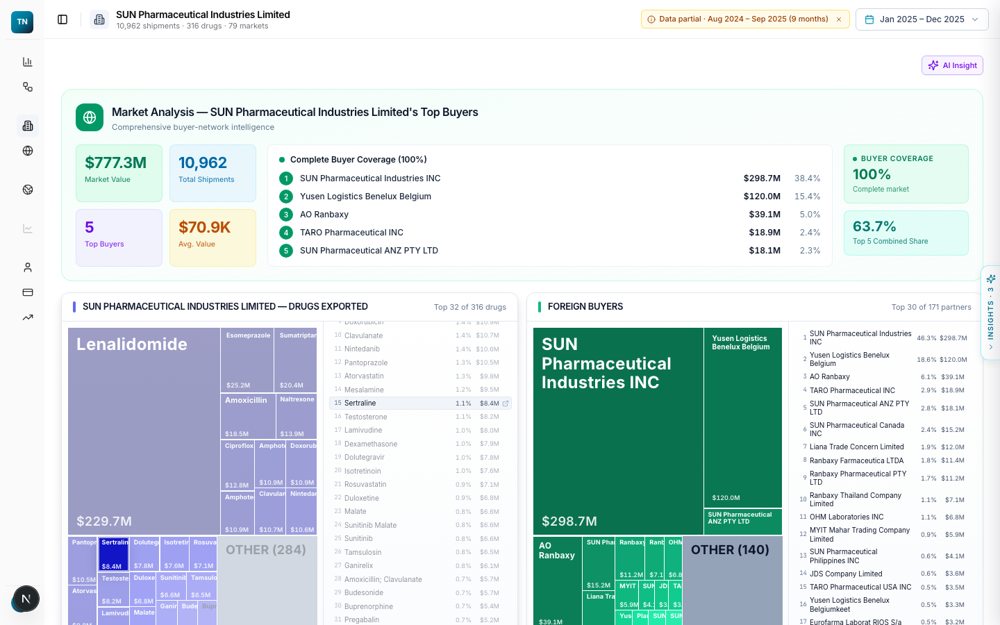

Data layer
Ingestion from authorised sources. Harmonisation onto one molecule spine, so every register lands on the same key. Prebuilt marts for the questions you ask most. Vintage stamping on every record. Integrity checks that run on each refresh.
Development · software services
The data layer, the lenses, the natural-language query service and the trade explorer. Built under your brand, on your data or ours, owned by you. It is the same stack we run ourselves, so nothing on this page is a proposal; it is a description of working software.
What we build
Each part exists as running software on our own platforms. A build for you starts from that code, not from a blank page.
Ingestion from authorised sources. Harmonisation onto one molecule spine, so every register lands on the same key. Prebuilt marts for the questions you ask most. Vintage stamping on every record. Integrity checks that run on each refresh.
Decision views over the resolved data. Each lens arranges the same numbers around one question. Source and vintage sit under every figure. Every view exports to a spreadsheet.
Retrieval over entity and schema indexes before anything is written. SQL written, then validated. Read-only execution with a cap on every query. Scope and provenance guards on the answer. When the question is unclear, it asks first.
Shipment-level search over export and import records. Company and country profiles built from the same records. A flow analyser that follows one product to every buyer. A global module for bilateral flows by product and period.
Proof: what we run
These are not mock-ups. They are live systems on real records, in use today. A build for you starts from this code.

Healthcare & Pharma platform. Built and operated by us: the Data Atlas, nine lenses and Ask over 177 harmonised datasets.

Trade Data platform. Built and operated by us: shipment-level search, company and country profiles, flow analyser and global module.

NLQ · Ask. Built and operated by us: the query service with its retrieval, validation and provenance gates, and a library of 657 verified questions.
How a build fits together
Your internal data and our harmonised sources are resolved onto the same spine. The platform that reads it carries your brand. At the end you decide whether we keep running it or you take it over.
Stack
Nothing exotic. The stack is chosen so that your own engineers can read it, run it and change it after handover.
Single-tenant: one deployment per client, on your infrastructure or ours, with nothing shared between clients. The warehouse is opened read-only; the platform reads, it never writes. Every query carries a time and memory cap, so one heavy question cannot slow the rest. Every answer is auditable: an Ask answer ships with its SQL and the records it used, and every lens figure names its source and vintage. The text of a question goes to the model provider to draft SQL; your data does not.
How an engagement runs
The spine, the lenses and the question library already exist. A build for you starts from them, which is why the first working screen is on your data, not on a sample.
You bring the questions your teams ask most. We map each one to the registers that answer it, the lenses it needs and the gaps in your data or ours. The output is a scope you can read in one sitting.
Starting from our spine and lenses, we harmonise your registers onto the same key, build the marts your questions need and put your brand on the interface. Each figure carries its source and vintage from the first build.
Your analysts use the platform on real work. Their questions go into the verified library. What they cannot answer becomes the next lens or the next mart. Nothing ships until it survives their use.
Managed by us, refreshed as registers are released, or handed over with the code, the pipelines and the tests so your engineers carry it forward. You choose at the end, not the start.
Two ways to own it
The difference is who the platform belongs to. Both sit on the same spine and pass the same checks.
Our data packages and our platform, deployed privately for you. The lenses, the Data Atlas, Ask and the trade explorer, on your infrastructure or ours, refreshed as registers are released. Your internal registers can be added to the spine. We run it.
Built under your brand, for your questions, on your data, ours or both. The data layer, the lenses you need, the query service and the explorer, delivered with the code, the pipelines and the tests. You own it and your engineers run it.
Questions we are asked
Yes, when it is handed over. A platform built under your brand is delivered with its repositories, pipelines and tests, and it is yours from then on. A managed deployment of our platform stays ours; you own the data you bring to it.
Yes. The platform is single-tenant and runs on your infrastructure or ours. Nothing in the stack depends on a particular host.
No. A build can run on your data alone, on ours alone, or on both harmonised onto the same spine. Our packages are available when they help and left out when they do not.
The text of a question goes to the model provider so it can draft SQL. Your data, the records and the answers stay in the deployment.
Send the questions your teams ask most. We will show you, on the live system, how much of the answer already exists and what a build for you would add.